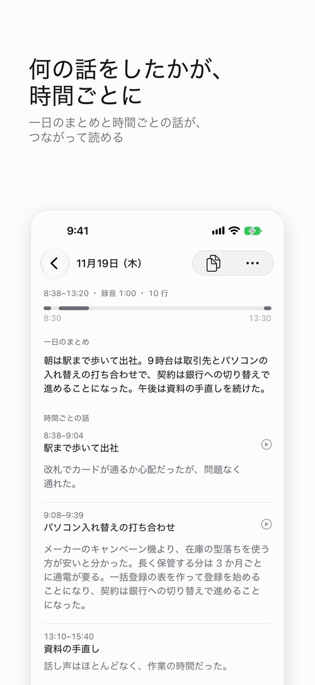
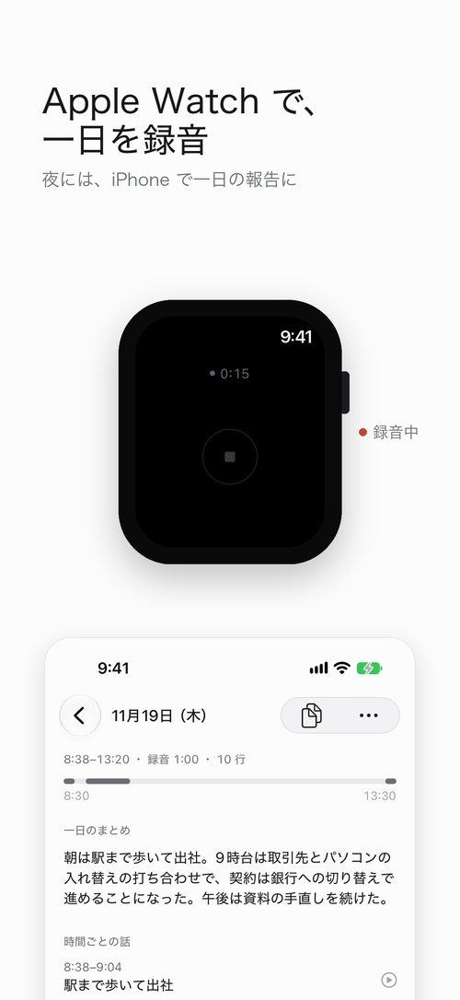
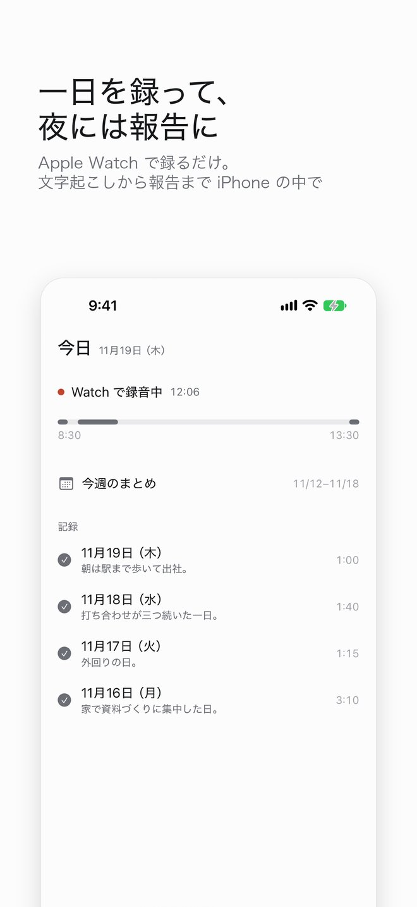
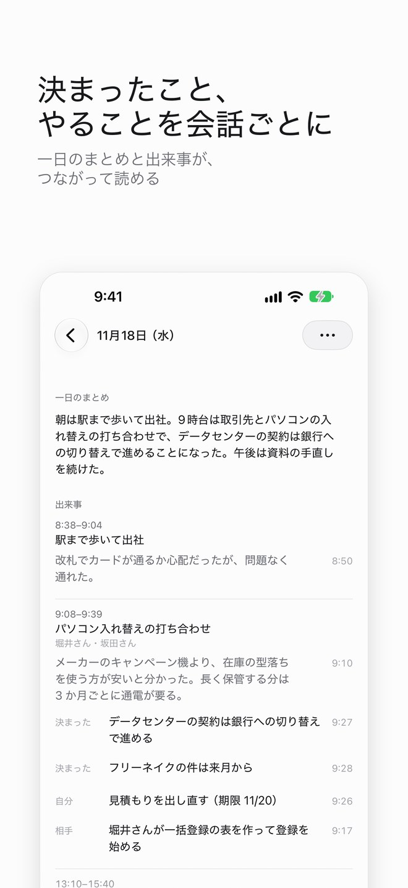
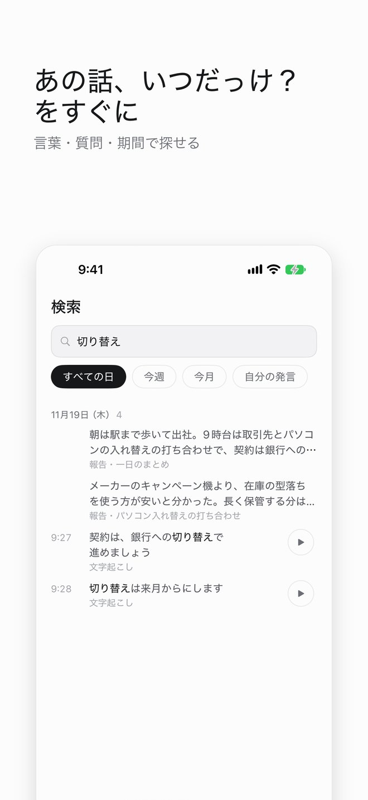

一日を録って、夜には報告に。
Apple Watch か iPhone で、自分が参加する会話や独り言を録音します。文字起こしは iPhone の中で行い、概要・決まったこと・やることを一日の報告にまとめます。外部の AI の設定もアカウント登録もいりません。
- 使う場面
- 会話・一日の記録
- 使える端末
- iPhone（iOS 27 以降）・Apple Watch
- 記録の置き場所
- iPhone と Apple Watch の中


DayDay はどんなアプリ？
DayDay は、自分が参加している会話や独り言を Apple Watch・iPhone で録音し、iPhone の中で日本語の文字にして、一日の報告にまとめる音声日記アプリです。音声は Pohoda のサーバーに送られません。
- 打ち合わせや相談の内容を、あとから見返したい人
- 一日の出来事や思いつきを、手間なく日記・日報にしたい人



録音は自分で始めて、自分で止める
決めた時刻の通知からワンタップで録音が始まります。Apple Watch は iPhone が近くになくても録音でき、あとでまとめて届きます。録音中は OS のマイクの表示が出ます。
文字起こしは iPhone の中で
日本語の文字起こしは iPhone の中だけで行い、音声は外に出ません。人の名前・社名・用語は「よく出る言葉」に登録できます。
朝には報告ができている
概要・時間帯ごとの出来事・決まったこと・やること・気づきが、話した項目だけ並びます。どの行からも元の文字起こしと音声に戻れます。
探す・まとめる
言葉でも、質問でも探せます。やることは日をまたいで集まり、リマインダーやカレンダーに送れます。
好きな AI に渡せる
文字起こしに整理用のプロンプトを付けて、ワンタップでコピーできます。貼り付けるのは自分で選んだときだけです。
見られたくない記録のために
アプリを開くときの Face ID。通知には中身が出ません。音声・文字起こし・報告は、日ごと・期間ごとにいつでも消せます。
まず3日分の録音を試せます。
録音した日が3日に達するまで、購入せずに試せます。続けて新しい録音を始めるには、買い切りを一度だけ購入します。月額・年額はありません。これまでの記録の閲覧・検索・コピー・再生は、購入しなくても使えます。
詳しくは 利用規約 と 特定商取引法に基づく表記 をご覧ください。
録音は、手元の端末の中に。
音声・文字起こし・報告は iPhone と Apple Watch の中だけに保存します。Pohoda のサーバーはなく、アカウント登録も広告もありません。報告づくりの Private Cloud Compute は、選んだときだけ使います。詳しくは プライバシーポリシー をご覧ください。
録音するのは、自分が参加している会話だけにしてください。文字起こしと報告は自動の処理による結果で、聞き間違いを含むことがあります。書き出した記録の法的な効力は約束しません。
録音を隠せますか？
隠せません。録音は自分で始めて自分で止め、録音中は iPhone と Apple Watch のマイクの表示が出ます。録音するのは、自分が参加している会話だけにしてください。
音声や文字起こしはどこに保存されますか？
iPhone と Apple Watch の中だけです。Pohoda のサーバーはありません。アプリを削除すると消えます。
報告づくりでデータは外に出ますか？
設定で「Private Cloud Compute を使う」を選んだときだけ、文字にした文章（音声は含みません）を Apple の Private Cloud Compute で処理します。「端末内だけで使う」を選ぶと外には出ませんが、報告は簡易な形になります。
書き出した記録は証拠になりますか？
書き出しは記録を手元に残すための機能で、証拠としての効力を約束するものではありません。使うときは、弁護士などの専門家にご相談ください。